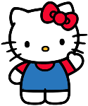
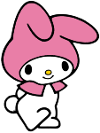
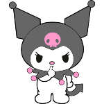
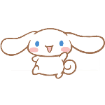
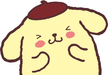

-
Hello Kitty
É a mais conhecida dentre todos os personagens da Sanrio. Seu nome original é Kitty White e ela nasceu nos suburbios de Londres, na Inglaterra, dia 01 de Novembro. Tem a altura de cinco maçãs empilhadas e o peso de três maçãs. Seu sonho é ser uma pianista ou uma poeta.
-
My Melody
A melhor amiga de Hello Kitty. Nasceu na Floresta Mágica de Mariland em 18 de Janeiro. Seu maior hobbie é assar bolos de amendoas. É uma personagem honesta e gentil com a natureza. Tem um irmão mais novo chamado Rythm.
-
Kuromi
Inicialmente era a rival e doppelgänger de MyMelody, mas depois elas se tornaram amigas. Nasceu em Mariland, no dia 31 de Outubro. Embora haja como uma punk, Kuromi é bastante feminina e adora histórias de romance. Suas cores preferidas são preto e rosa choque. Kuromi é tida como uma personagem de espírito livre.
-
Cinnamoroll
Nasceu em 6 de Março em uma nuvem no céu. Suas orelhas grandes permitem com que ele voe. Sua comida favorita é, ironicamente, cinnamonroll. Ele trabalha no café Cinamon e, às vezes, dorme no colo dos clientes.
-
Pompompurin
Pompompurin nasceu em 16 de Abril. É um Golden Retriever, ama beber leite e comer o pudim de caramelo que sua mãe faz. Ele ama coisas fofinhas e faz amigos muito facilmente. Tem a medida de cinco pudins grandes e pesa uma melancia.
-
Keroppi
 É um sapo com grandes olhos e, usualmente, é visto com as bochechas cor de rosa. Nasceu em 10 de Junho e tem uma namorada chamada Keroleen.
É um sapo com grandes olhos e, usualmente, é visto com as bochechas cor de rosa. Nasceu em 10 de Junho e tem uma namorada chamada Keroleen.